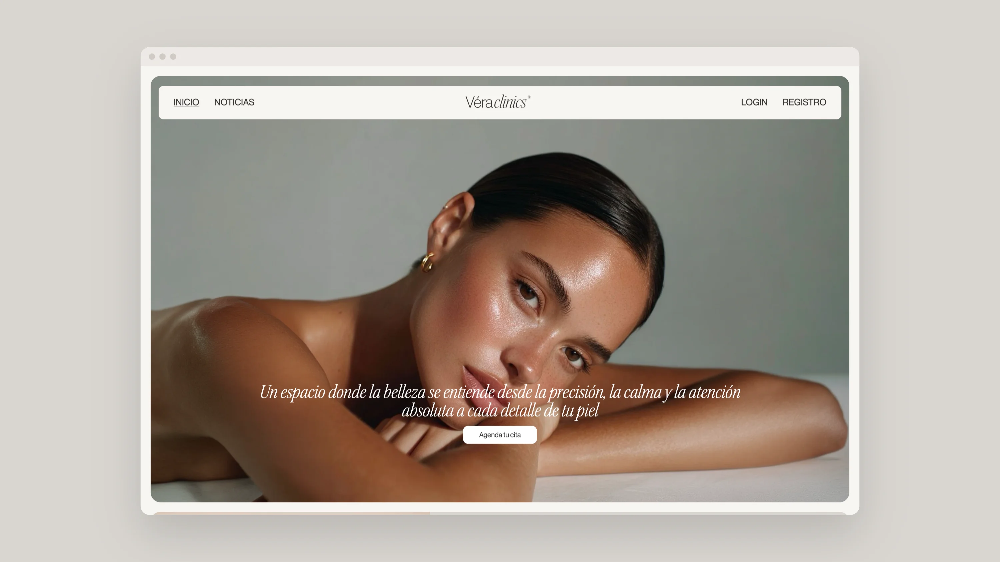
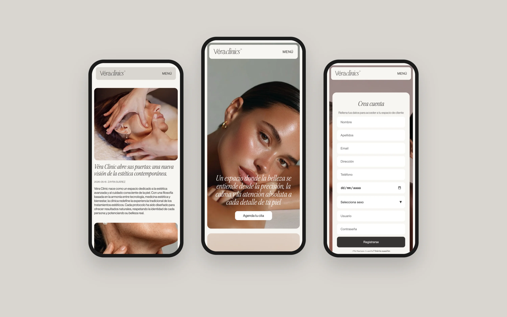
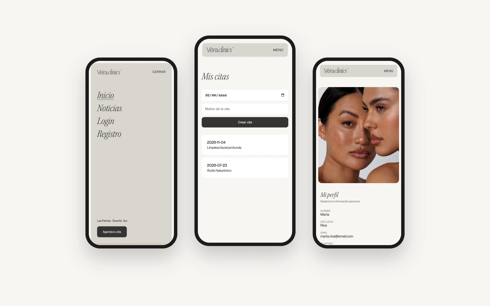

VERA CLINIC

Con Vera Clinic quise ir más allá de la pantalla de inicio. Me preguntaba qué pasa cuando alguien pulsa «Agenda tu cita», y acabé construyendo todo lo que hay detrás: el registro, las citas y un panel para que la clínica lleve su web sin depender de nadie.
La escribí en PHP y MySQL, tabla a tabla: pacientes, accesos, citas y noticias. Descubrí que ahí también se diseña. Decidir qué pide un formulario, qué ve cada persona al entrar y qué puede tocar el equipo de la clínica es tan importante como elegir una tipografía.

En el móvil quise que todo estuviera a un gesto: abrir el menú, entrar y ver tus citas sin tener que buscar.


Esta vez el viaje fue hacia dentro, hacia todo lo que hay detrás de una pantalla.